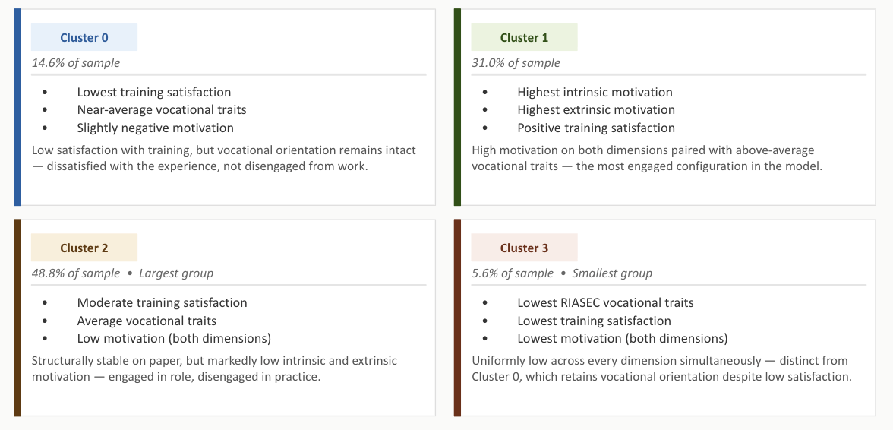
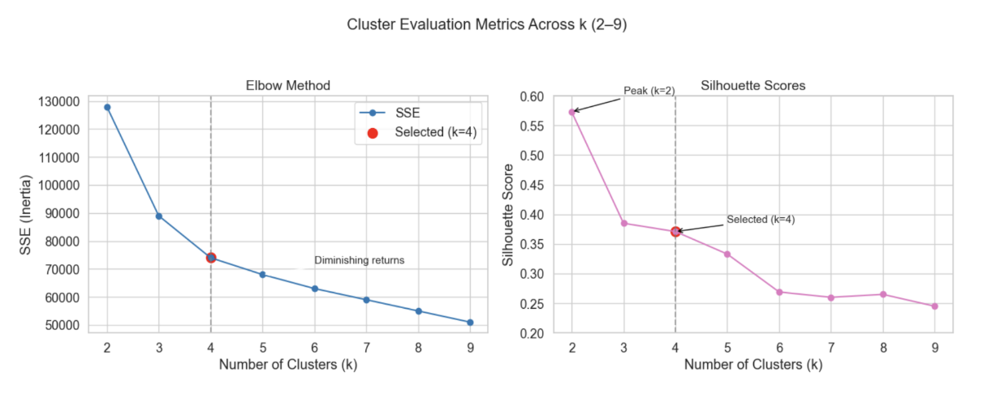
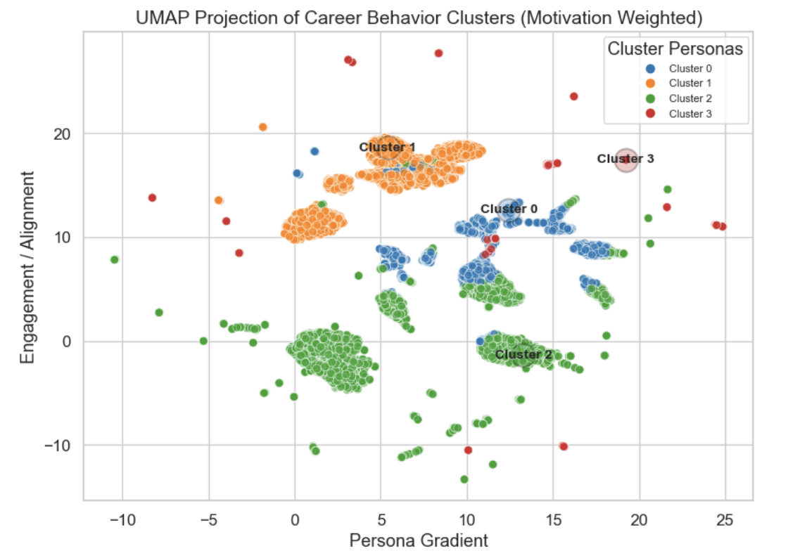
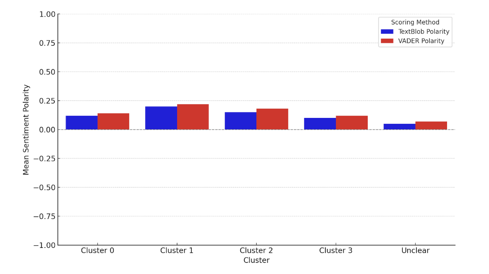

Identifying four empirically-grounded career personas from harmonized RIASEC and motivation features, with sentiment-augmented validation.
Research Question
The second research question asks what career personas emerge when alumni are clustered on the harmonized feature set developed in Part 1. The framing matters. The study does not seek to confirm a pre-specified taxonomy of career types or to map alumni onto an existing instrument's categories. It treats persona structure as an empirical question, allowing the data to surface natural groupings that reflect how PhD careers actually develop.
Four personas emerge with stable structure: a high-engagement, high-motivation group representing roughly a third of the sample; a structurally engaged but motivationally disengaged majority; a small group with uniformly low scores across all dimensions; and a group whose vocational orientation remains intact despite low training satisfaction. These groupings are theoretically meaningful, empirically separable, and externally validated through sentiment analysis on free-response data.

Approach
Cluster count selection balances within-cluster compactness against between-cluster separation. The elbow plot identifies diminishing returns in inertia reduction beyond k=4, while silhouette analysis peaks at k=2 with a meaningful local stability point at k=4. The study selects k=4 over the silhouette peak because the two-cluster solution collapses theoretically distinct groups (notably separating motivationally-engaged students from those whose engagement persists despite dissatisfaction). The choice trades a small loss in silhouette score for substantial gains in interpretive resolution, a tradeoff documented transparently in the methods.

UMAP projection reveals coherent cluster structure in the high-dimensional feature space. The four personas occupy distinguishable regions of the embedding, with Cluster 1 forming the densest core, Clusters 0 and 2 occupying overlapping but separable territory, and Cluster 3 dispersing across the periphery as expected for the smallest and most heterogeneous group. The projection serves as a visual robustness check rather than a primary analytic tool, confirming that the K-means partitioning is not an artifact of dimensional pathology.

Cluster membership is externally validated against free-response text data using TextBlob and VADER polarity scoring. The hypothesis is straightforward: if the four personas reflect genuine differences in career orientation, those differences should manifest in the affective tone of how alumni describe their experiences. Both scoring methods produce convergent results, with Cluster 1 showing the most positive polarity and Cluster 3 the lowest, confirming that the clustering structure aligns with independently-measured affective signal.

Outcome
The four-persona structure produced in this stage serves as the labeled outcome for the supervised classification work in Part 3. Cluster assignments are retained at the alumnus level, allowing prediction models to be trained on the full feature set with persona membership as the target variable. The robustness checks documented here, including sentiment validation and visual confirmation via UMAP, anchor the downstream classification work in a defensible empirical foundation.